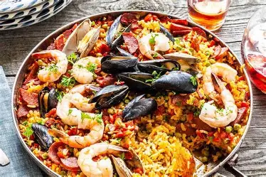

PAELLA

Description
Paella is a traditional Spanish rice dish originally from Valencia. It is known for its vibrant flavors and colorful presentation, often cooked in a wide, shallow pan over an open flame.
This dish typically includes a mix of seafood, meats, vegetables, and seasoned rice infused with saffron, making it both aromatic and visually stunning.
Ingredients
- 2 cups of short-grain rice
- 1/2 teaspoon saffron threads
- 1 onion, chopped
- 2 cloves garlic, minced
- 1 red bell pepper, sliced
- 1 tomato, grated
- 1/2 cup peas
- 8 prawns
- 8 mussels
- 2 cups chicken broth
- Salt and olive oil
Steps
- Sauté the onions, garlic, and bell pepper in olive oil until soft.
- Add the grated tomato and cook for a few minutes.
- Add the rice and stir to coat with the mixture.
- Add saffron and chicken broth, and bring to a boil.
- Add the seafood and peas, then reduce heat and simmer uncovered.
- Cook until the liquid is absorbed and the rice is tender.
- Let it rest for a few minutes before serving.